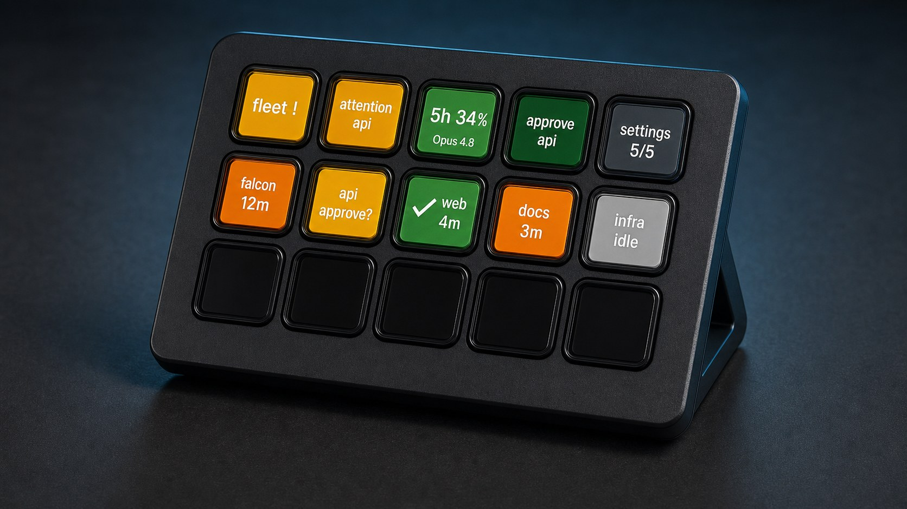
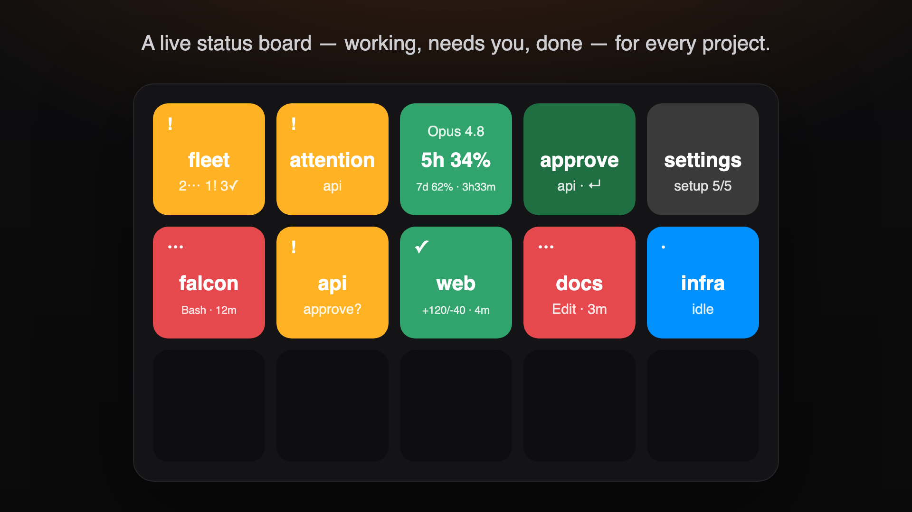
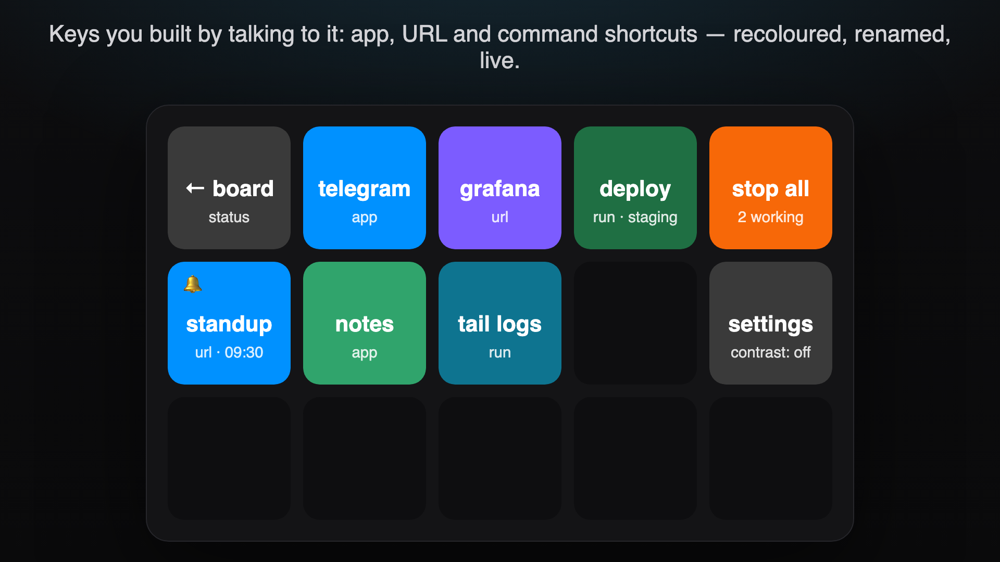

One key per project, glowing with that project's live Claude Code status — working, needs-you, done. Answer permission prompts with a keypress, watch your 5h and 7d usage on a gauge, and build the whole board by talking to it.

⋯working !needs you ✓done ·idle
Run Claude Code across several repos and the hard question stops being "what is it doing" and becomes "is anything waiting on me?" Jetstream answers that from across the room. Every project gets a key that carries its own live state — ⋯ working, ! needs-you, ✓ done — so an idle agent stuck on a prompt is visible instead of silently burning your afternoon.

One key per project, each carrying its own name, path, and live state.
Short-press opens the project in your editor; long-press interrupts the session. Done keys show the change size — +120/-40 · done 4m.
One always-visible key counting the whole fleet (3w 1! 2✓), coloured by the worst state present — so projects can outnumber keys.
Answer the oldest pending Claude permission request straight from the deck. No press within ~90s and Claude falls back to its own dialog.
Your real 5h and 7d subscription windows, plus the sooner reset — resets 3h33m.
A doorbell key that flashes when a request goes unanswered, covering every repo in your config.
Preset headless claude -p launches, usable inside Stream Deck multi-actions.
jetstream chat takes plain English and applies it live — no re-import, no dragging. Describe your repos, add an app, URL, or command shortcut key, recolour something, set an emoji or the app's real logo as an icon. jetstream init is the guided version: it scans a folder for repos, writes your config, wires the hooks, and can prebuild a ready-made layout for a Mini, MK.2, or XL.

Control keys: approve, deny, the usage gauge, and the fleet roll-up.
Every state also carries a glyph (⋯ ! ✓), so the board reads without relying on colour — and the settings key's high-contrast theme swaps the red/green pair for orange/blue.
Needs an Elgato Stream Deck (any model), Node.js 22.12+, and Claude Code logged in with your subscription (claude → /login). Leave ANTHROPIC_API_KEY unset — Jetstream strips it from anything it spawns, so a keypress can never silently bill the metered API.
npm i -g @pimmesz/jetstream jetstream install # hands the plugin to the Stream Deck app — approve there jetstream chat # conversational — "3 repos in ~/dev", "add a Telegram key at a8" jetstream init # or the guided wizard: repos, theme, a ready-made layout jetstream doctor # read-only health check when the board isn't lighting up
On first launch the plugin wires two hooks into ~/.claude/settings.json, backing the file up first: the status hook that lights the board, and the permission hook that lets Approve/Deny answer prompts from the deck. No terminal step. Restart any running claude sessions to pick them up — and if you remove the hooks, they stay removed.
Nothing is device-specific, nothing phones home, and watching costs you no quota.
Claude Code's own hooks tell the plugin what each session is doing over 127.0.0.1 — never the network. The status hook reports lifecycle events; the permission hook additionally holds a pending prompt briefly so a deck key can answer it.
Each Project key holds its own name and path, so everyone's board is their own. Drag as many as your device has — Mini 6, MK.2 15, XL 32, Neo — or let init prebuild a starting layout.
Open the project, interrupt a run, approve or deny a permission prompt, or fire a preset headless launch. The deck stops being a read-only dashboard.
projects.json defines every repo in one place, so the Fleet roll-up and Attention doorbell cover projects you never gave a key.
Worth being precise about, because the two allotments are separate and it's easy to assume otherwise.
Shows your interactive 5h and 7d subscription windows — the same numbers /usage reports.
Runs headless claude -p, which draws the separate Agent-SDK allotment. It does not move the 5h/7d gauge.
The hooks only talk to the plugin locally. Lighting the board costs no quota at all.
ANTHROPIC_API_KEY is stripped from every spawned process, so a keypress can't silently bill the metered API.
Mirrored automatically from the README — the single source of truth.
Claude Code, logged in with your subscription (claude → /login). Leave
ANTHROPIC_API_KEY unset: Jetstream strips it from anything it spawns so a keypress
can never silently bill the metered API.
Jetstream: npm i -g @pimmesz/jetstream, then
jetstream install — it hands the packed plugin to the Stream Deck app; approve
the install prompt there. (Updating? Re-run the same two commands.) That's it — on first
launch (once, recorded in a marker next to projects.json) the plugin wires two hooks
into ~/.claude/settings.json, backing the file up first: the per-project status
hook (lights the board) and the permission hook (lets Approve/Deny keys answer
Claude's permission prompts from the deck — while the plugin runs, an unanswered prompt
falls back to Claude's own dialog after ~90s). No terminal step. Restart any running
claude sessions to pick the hooks up. Remove the hooks from settings.json and they
stay removed — re-wire any time with jetstream setup. The usage/statusline hook is
installed automatically on first launch if you have no statusline yet (re-wirable via the CLI commands below).
With the plugin installed (step 2 above), set up your fleet — two ways, both via the jetstream CLI:
jetstream chat # conversational — "3 repos in ~/dev: …", "add a Telegram key at a8"
jetstream init # guided wizard — repos, theme/timings, a ready-made layout
chat lets you describe repos AND arrange keys in plain English (add app/URL/run shortcuts,
recolour, rename, set emoji/logo icons), applied live.
init asks for your repos (or scans a folder), your theme and timings, writes
projects.json (see below), wires the hooks — and can prebuild a ready-made key
layout for your deck (Mini / MK.2 / XL) as a Jetstream.streamDeckProfile in
~/Downloads you double-click to import. The import installs it as a new profile on the device you
pick in the dialog; your existing layout is never touched. (The layout file mirrors the
profile format Elgato's own plugins ship, but treat it as experimental — dragging keys
by hand always works.)
The smaller pieces still exist: setup (hooks + a starter projects.json template),
hooks install (only the hooks; the old bin/hooks-install.js still works, and
--tool-detail adds the active-tool hooks), and doctor (read-only health check for
when the board isn't lighting up).
Drag keys onto your deck: Project status (set a name + project path per key;
short-press opens the project folder in your editor (VS Code → Cursor → $EDITOR, else the OS
folder opener), long-press interrupts the session; done keys show the
change size, +120/-40 · done 4m), Fleet roll-up (one always-visible key counting the whole
fleet — 3w 1! 2✓ — coloured by the worst state present, so "is anything waiting on me?" is
answerable even when projects outnumber keys), Attention (flashes if a request goes
unanswered), Usage gauge (5h/7d used + the sooner reset, resets 3h33m), CI / PR status (one
always-visible key: the worst CI state across your open afterburner/ PRs — green / red /
running — flashing when CI newly fails; needs the gh CLI logged in), Launch preset
(now usable inside Stream Deck multi-actions), Approve / Deny (place one of each — they answer
the oldest pending Claude permission request straight from the deck; no press within ~90s → Claude
falls back to its normal dialog), and Jetstream settings (press to toggle colour-blind mode;
its inspector sets escalation/long-press/refresh). Amber keys distinguish a deck-answerable prompt
(!, approve?) from an open question you must type (?, answer).
Every state also carries a glyph (⋯ working, ! needs-you, ✓ done), so the board reads
without relying on colour — and the settings key's high-contrast theme swaps the red/green pair
for orange/blue
Nothing is device-specific — you drag as many keys as your device has (Mini 6, MK.2 15, XL 32,
Neo). No fixed layout is required — drag keys wherever you like, or let jetstream init prebuild
a starting layout (Mini / MK.2 / XL); each Project key holds its own name+path, so everyone's
board is their own. (Stream Deck + dials / touch strip aren't used yet — a future item.)
Define your whole fleet in one place instead of a placed key per repo — jetstream init
builds this file for you, or write it by hand. Jetstream reads
$XDG_CONFIG_HOME/jetstream/projects.json (else ~/.config/jetstream/projects.json;
%APPDATA%\jetstream\projects.json on Windows) at startup:
{
"projects": [{ "id": "falcon", "name": "Falcon", "path": "/Users/you/falcon" }]
}
The Fleet roll-up and Attention doorbell then cover every repo in the file, so placed
Project keys become optional focused jump-to buttons rather than the only way the plugin learns
your repos. An optional "settings" block (theme, longPressMs, usageRefreshSec,
escalateAfterSec) presets the plugin config on a fresh install — the Settings key still wins at
runtime. Run jetstream.js doctor to check the file is parseable.
Working keys can show the current tool (Bash · 12m) instead of just working 12m. It needs the
higher-overhead PreToolUse/PostToolUse hooks (a hook process per tool call), so it's opt-in:
node "<plugin folder>/bin/jetstream.js" hooks install --tool-detail
claude -p, which draws the separate Agent-SDK
allotment — it does not move the 5h/7d gauge.127.0.0.1, never the network). The status hook reports lifecycle events; the
permission hook additionally holds a pending prompt briefly so a deck key can answer
it (falling back to Claude's own dialog after ~90s when unanswered).Elgato ships an official MCP server (npm install -g @elgato/mcp-server, Stream Deck app
7.4+, enable MCP Deck in Preferences → General) that lets an AI assistant trigger
actions — but only ones you've placed on the dedicated MCP Actions profile; your other
profiles stay private. Jetstream keys work there like any action, so "approve the pending
Claude prompt" by voice/text is possible. Two caveats: the MCP server can trigger keys,
never build layouts (that's what jetstream init is for), and its actions fire without
per-call confirmation — use the stdio transport, skip the ngrok/HTTP modes, and only place
keys you'd let an AI press.
pnpm --filter '@pimmesz/jetstream' run check # typecheck + tests
pnpm --filter '@pimmesz/jetstream' run build # bundle into the .sdPlugin
pnpm --filter '@pimmesz/jetstream' run validate # Elgato manifest validation
pnpm --filter '@pimmesz/jetstream' run pack # produce the .streamDeckPlugin